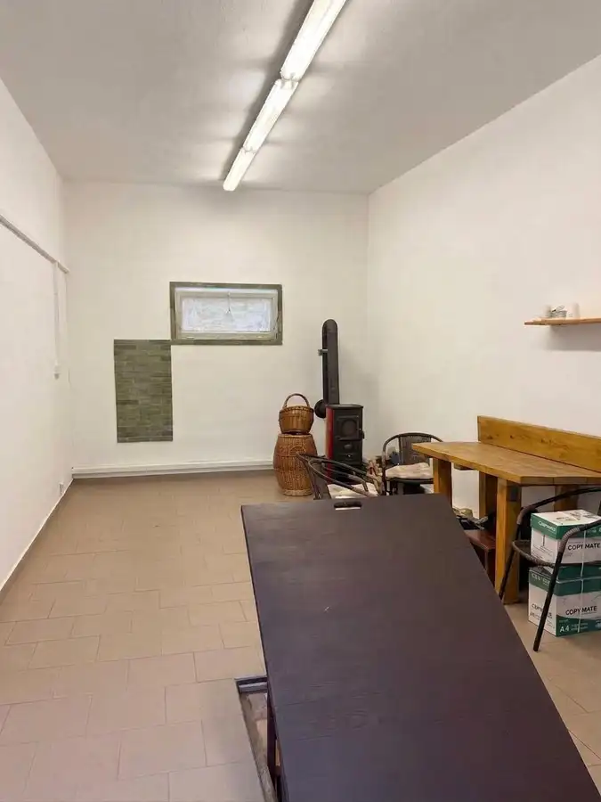

Výnimočná garáž s vlastným pozemkom a pivnicou – muškátova ulica, Pezinok
Pezinok

- Plocha58 m²
- StavKompletná rekonštrukcia
- VlastníctvoOsobné
O nehnuteľnosti
Ponúkame na predaj priestrannú, podpivničenú, murovanú garáž s vlastným pozemkom na Muškátovej ulici v Pezinku.Nejde o klasickú garáž určenú iba na parkovanie. Táto nehnuteľnosť ponúka množstvo priestoru a široké možnosti využitia. Samotná garáž má 29 m² a pod celou jej plochou sa nachádza ďalších 29 m² pivnice. Celkovo tak získate až 58 m² priestoru.Pivnica - má murované steny a nachádza sa v nej klimatizácia s ventiláciou.Vďaka tomu ponúka množstvo možností využitia napríklad ako: sklad, dielňa, zázemie na podnikanie alebo jednoducho veľký úložný priestor. Je len na vás, ako tento priestor využijete.Garáž disponuje nadštandardnými rozmermi:- šírka: 3,35 m- dĺžka: 7,36 m- výška: 3,06 m- šírka garážovej brány: 2,56 m- výška garážovej brány: 2,76 m- parkovacia hmotnosť až 10 tonVybavenie garáže:- je tam zavedená elektrická energia- WC, pisoár- piecka na drevo- chladnička⭐ BENEFITY NEHNUTEĽNOSTI✔ poloha✔ veľkorysá výmera✔ garáž aj pozemok v osobnom vlastníctve✔ tehlová stavba s plechovou strechou✔ nadštandardná výška garáže 3,06 m✔ parkovacia hmotnosť až 10 ton✔ elektrická energia✔ klimatizácia s ventiláciou✔ široké možnosti využitia✔ nízke náklady Cena: 72100 EURV prípade záujmu Vám rada poskytnem bližšie informácie a zorganizujem obhliadku nehnuteľnosti — kontaktovať ma môžete telefonicky alebo e-mailom: +421 910323176, beata@arete.skSpoločnosť Areté real, s.r.o. nezodpovedá za správnosť, úplnosť a presnosť informácií uvedených v tomto inzeráte, ktoré majú iba informatívny charakter.Naša realitná kancelária Areté real, s. r. o. Vám ponúka v rámci ceny nehnuteľnosti:-zabezpečenie vyhotovenia kúpno predajných zmlúv, návrhu na vklad do katastra a ďalšej potrebnej zmluvnej dokumentácie-úhradu poplatku za podanie návrhu na vklad vlastníckeho práva do katastra-úhrady poplatku za overenie podpisov na kúpnych zmluvách-úhradu správnych poplatkov za výpis z listu vlastníctva
Parametre
- Druh
- Garáž
- Dátum zverejnenia
- 09. 09. 2026
- Počet pivníc
- 1
- Rok výstavby
- 1998
- Stav nehnuteľnosti
- Kompletná rekonštrukcia
- Typ
- Predaj
- Typ konštrukcie
- Tehlová
- Vlastníctvo
- Osobné
- Vybavenie
- Pivnica
- Vykurovanie
- Klimatizacia
- Úžitková plocha
- 58 m²